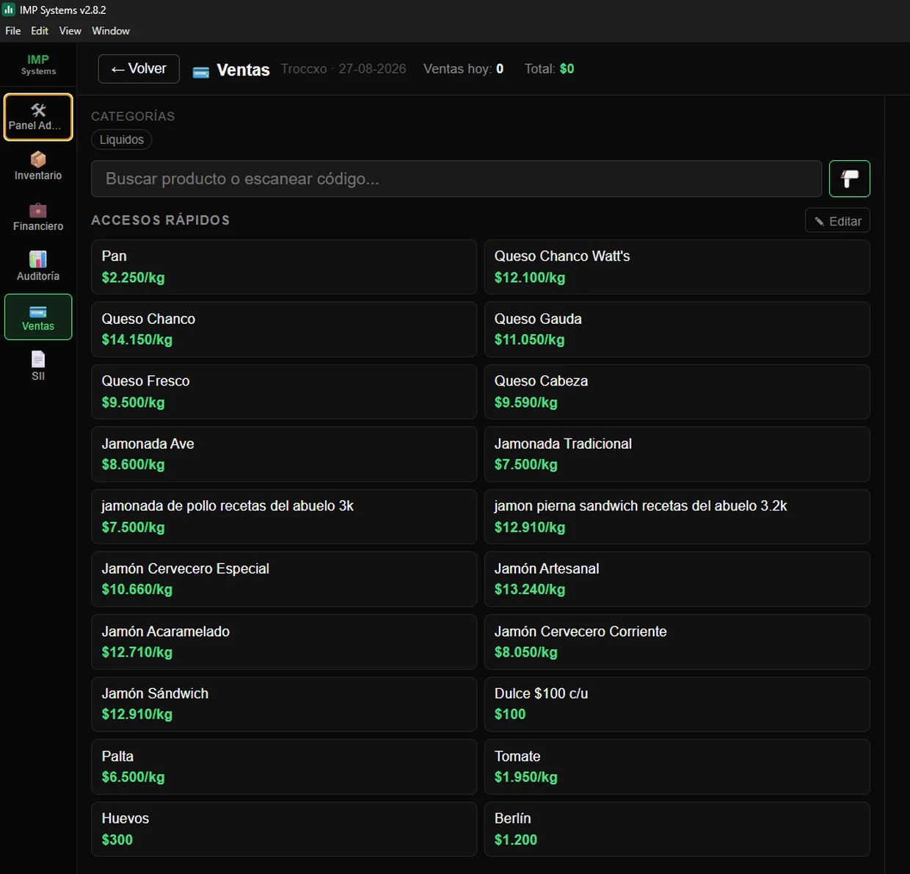
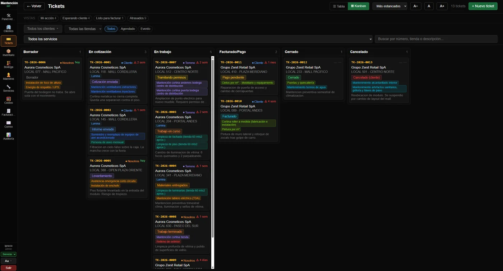
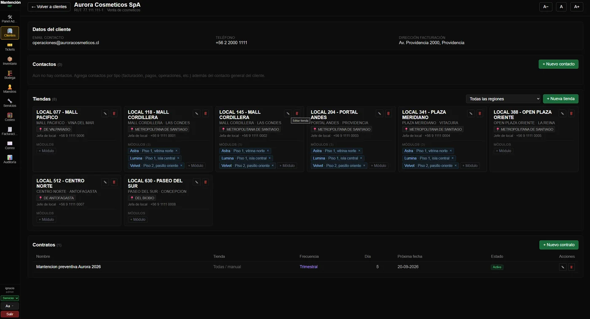
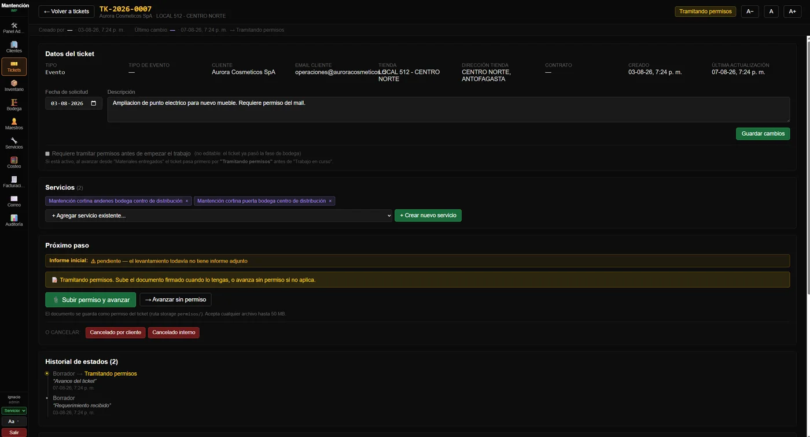
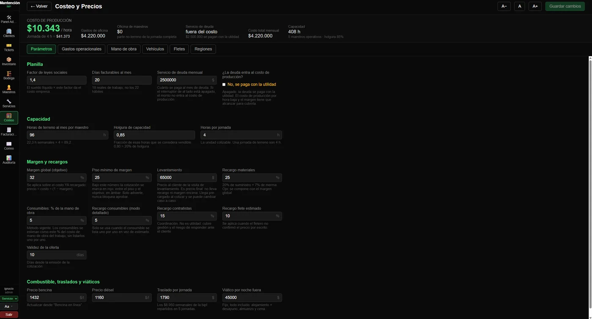
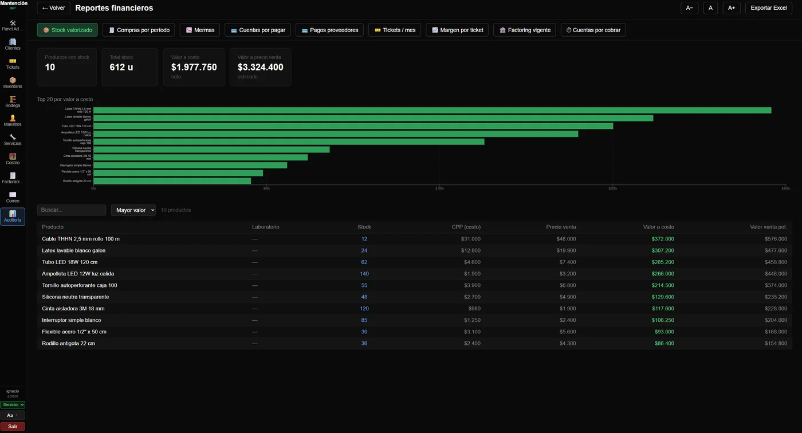
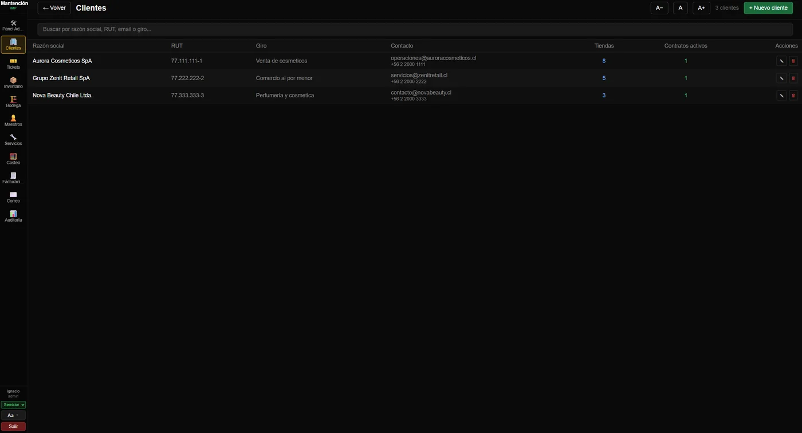
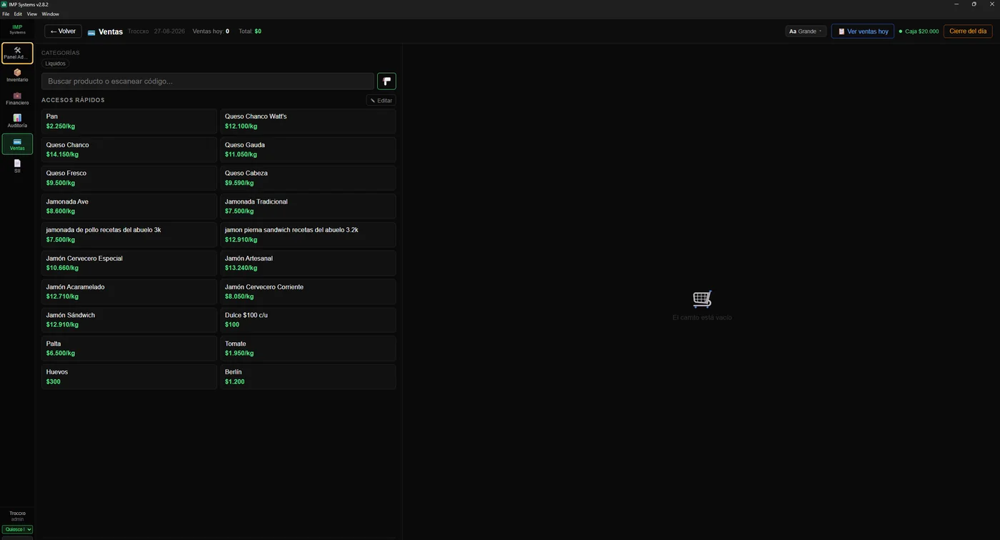

IMP Systems desarrolla software de gestión adaptado a cada rubro. Una sola plataforma, módulos a la medida de tu operación: inventario, ventas, caja, facturación electrónica y reportes.

Punto de venta de IMP Systems, en uso real.







Los datos que aparecen son de una empresa de demostración.
Sistema completo para farmacias y droguerías independientes. Comparador de precios entre proveedores, inventario por lotes con FEFO, POS, facturas, mermas y reportes financieros.
Versión adaptada para negocios de barrio: quioscos, panaderías, almacenes. Soporta productos por peso (gramos/kg), POS rápido y todo el motor de inventario y caja.
Sistema para empresas que mantienen locales comerciales (eléctrico, pintura, gasfitería, estanterías). Tickets de servicio por tienda, cotizaciones con materiales y mano de obra, bodega real, facturación, factoring y maestros asignados.
Estamos trabajando en adaptaciones para otros rubros: minimarkets, ferreterías, librerías, cafeterías. Cada vertical mantiene el mismo motor confiable y se ajusta a tu flujo.
IMP Systems nació del mundo farmacéutico, junto a profesionales del rubro, para resolver problemas reales de gestión. Hoy llevamos esa experiencia a otros rubros que comparten los mismos desafíos: stock, vencimientos, caja, facturación y reportes.
IMP Systems es la empresa detrás de Farma IMP, IMP Systems para Quioscos y Mantención IMP. Compartimos un mismo motor de software probado en producción, lo que nos permite extender nuevos verticales sin reinventar lo que ya funciona.
Nuestro foco está en negocios independientes que necesitan herramientas profesionales sin la complejidad ni el costo de los sistemas para grandes cadenas. Empiezas con lo esencial y agregas módulos cuando creces.
Si tu rubro no está cubierto todavía, escríbenos. Adaptamos el sistema según las necesidades reales que nos plantees.
IMP Systems es una empresa chilena de software de gestión para negocios. Desarrollamos tres productos sobre un mismo motor: Farma IMP para farmacias y droguerías, IMP Systems para quioscos, almacenes y panaderías, y Mantención IMP para empresas que mantienen locales comerciales.
Para negocios independientes que necesitan controlar inventario, ventas, caja y facturación sin el costo ni la complejidad de un sistema para grandes cadenas. Si tu rubro todavía no está cubierto, escríbenos: adaptamos el sistema según la operación real que nos plantees.
Es una aplicación de escritorio para Windows que se instala en el computador del negocio y trabaja contra tu propia base de datos en la nube. Se actualiza sola: cuando publicamos una versión nueva, la app te avisa y la instala.
Farma IMP e IMP Systems para quioscos parten en torno a 1,5 UF mensuales como valor referencial, que se ajusta al tamaño del negocio y a los módulos que uses. Mantención IMP se cotiza según el tamaño de la cartera de clientes, la cantidad de maestros y el volumen mensual de tickets.
Los productos de farmacia y quiosco contemplan integración con el SII para documentos tributarios electrónicos. Escríbenos y te contamos en detalle cómo queda tu caso según el giro y los CAF que tengas.
Por WhatsApp o teléfono al +56 9 7877 2578, por correo a contacto@impsystems.cl, o completando el formulario de esta página. Respondemos en menos de 24 horas hábiles.
Respondemos en menos de 24 horas hábiles. Si prefieres, usa el formulario y te contestamos por el mismo medio.